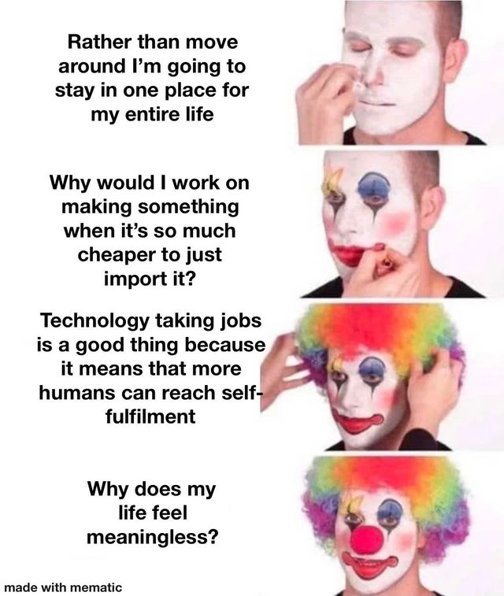

Philosophy of Technology
Table of Contents
- 1. Introduction
- 2. Evolutionary Mismatch
- 3. The Power Process
- 4. The Most Influential Inventions Of All Time
- 5. Technology Causes Just As Many Problems As It Solves
- 6. The Effects Of Technology On Human Evolution
- 7. Transhumanism
- 8. Futurist Fantasies
- 9. Anarcho-Primitivism
- 10. Pragmatopianism: A Better, More Feasible Alternative To Both Anarcho-Primitivism And Transhumanism
NOTE: I haven’t finished writing this page.
1. Introduction
At the beginning of my philosophical journey, I was more enthusiastic about Transhumanism since it presents a positive narrative of progress that could theoretically continue well into the future, but after a few years of thinking and evaluation, I decided that Transhumanism is overrated, unfeasible, and a distraction from the much larger social problems facing Humanity in the 21st century that cannot be solved by technology (e.g. delusional mainstream culture, political corruption, dysgenics, overpopulation, evolutionary mismatch, etc). By contrast, I came to view Anarcho-Primitivism as being greatly underrated because people generally overrate the overall goodness of technology and do not recognize that Primitivism is another way of solving the evolutionary mismatch problem facing the Modern World. In this essay, I will evaluate the two polar-opposite ideologies, and conclude with proposing Pragmatopianism instead of either of them.
2. Evolutionary Mismatch
There are essentially two main ways to solve evolutionary mismatch. We can imagine two distinct worlds, a Primitivist world where humans are living in an environment that is very similar to the one the evolved to live in for most of human history, and a technologically-advanced world (Pragmatopia) where humans are well-adapted to living in a high-tech environment, whether that be through selection via EPC, genetic-engineering, the mass adoption of stable memetic traditions, or some combination of those factors. The Pragmatopian World is probably the closest thing that could ever be to a transhumanist utopia, but it would probably be less technologically advanced than the transhumanists are hoping for.
We can also imagine a third world where evolutionary mismatch is not resolved at all, much like the one that the Modern World is currently living in as of the early 21st century. This third world is far less pleasant than the Primitivist or the Pragmatopian Worlds because evolutionary mismatch is a major cause for social unrest, political instability, massive struggling, and the loss of purpose via the disruption of the power process. Technology, society, and culture change faster than evolution can, which is how evolutionary mismatch managed to occur worldwide within just 200 years since the Industrial Revolution.
Although Primitivism solves the problem of Evolutionary Mismatch, Transhumanism does not, nor does it even recognize it as a problem that needs to be addressed.
3. The Power Process
The Power Process, as defined and explained in Industrial Society and Its Future by Ted Kaczynski
The “Power Process” described by Ted Kaczynski is most similar to the following terms that are used in Academia:
When Humanists are clamoring about wanting people to “flourish”, they don’t specifically define the term, but what they most likely mean that they want people to go through the power process. Unfortunately, Humanists don’t have the philosophical grounding to understand what the power process is, or how technology prevents people from experiencing the power process.
Transhumanists don’t have any solutions for ensuring that people are able to find purpose and meaning in their lives in the Modern World. Somehow, they believe that creating even more technology will automatically make everything better, even though it will more likely make the problem even worse by making purpose even harder to attain. On the other hand, Anarcho-Primitivism has very easy solutions to ensuring that people will still be able to find purpose and meaning. Anarcho-Primitivism seems in line with many existentialist ideas.
4. The Most Influential Inventions Of All Time
Philosophically, I don’t necessarily believe that there is any list of “greatest inventions of all time”, because I understand that technology always brings unintended consequences, and is often more harmful than it is beneficial to human societies. Hence, this list shall be called “Most Influential Inventions Of All Time” instead.
- Shipping Container
- The Transistor
- Digital Computers
- The Internet
- Vaccines
- The Printing Press
- The Typewriter
- Telegraph
- Telephone
- Smartphones
- The Caravel
- The Steam Engine
- Wind Mills & Turbines
- Nuclear Bombs
- Nuclear Reactors
- Railroads
- The Automobile
- Airplanes
- The firearm
- Fire
- The Chariot
- Crop Rotation
- The Haber-Bosch Process (needed for modern nitrogen-rich soil)
- Interchangeable Parts
- The Cotton Gin
- Refrigerator
- Radio
- Television
- Vacuum Cleaner
- Dishwasher
- Washing Machine
- Clothes Dryer
- Sewage Systems
4.1. The Most Important Inventions Since The Industrial Revolution
Nearly all the improvements to our standard of living over the past 200 years have NOT involved government:
- Vaccination
- Shipping Container
- Printing Press
- Transistors
- Computers
- Smartphones
- Databases
- Modern Kitchen Appliances
- Water Heater
- Air Conditioner
- Steam Engine
- Light Bulbs
- Photography
- Radios
- Television
- Cheap, Accessible Music
- Locomotives
- Automobiles
- 3D Printers
- Ride-Share Apps
- Airplane Transportation; to be fair, a substantial number of airports are publicly owned
- Reduction in World Poverty
- Improvements in Medical Care and Health Treatments
- Improvements in Building and Construction
- The Internet (funded by government research in the beginning, but 99% is controlled privately)
With the exception of the Internet’s invention being funded by the government, NONE of the inventions that I have stated above were invented by the government. This stands in stark contrast to the list of notable government atrocities that I sent, and that wasn’t even a complete list.
The most important items on this list are probably: 1. Vaccination, 2. The Internet, and the Shipping Container.
4.2. The Most Important Primitive / Pre-Industrial Inventions
- Fire
- Shelter
- Clothing
- Wheel
- Agriculture
- Domesticated Animals
- Building / Hunting / Agriculture Tools
- Aquaducts
- Naval Transportation
- Clocks
- Writing Systems
- Positional Base-10 Numbering System (maybe not developed the same time period as the rest of these, but still important none the less)
5. Technology Causes Just As Many Problems As It Solves
Anarcho-Primitivism is counter-intuitive since technology is created in the first place in order to solve problems. The problem with solving third-world problems with technology is that many simultaneous technological changes, malevolent actors, and evolutionary mismatch make it so that technology creates just as many problems (first-world problems) as it solves. And frankly, the new ones are just as bad as the old ones (if not now, then eventually), and arguably worse in some cases. People tend to be more oblivious to the downsides of technology than they are to upsides. When I say “first-world problems”, I’m not just talking about minor inconveniences, I’m also talking about all the things written in these lists:
5.1. Overuse Of Technology
- less in-person social interaction
- insomnia caused by reception of blue light within human eyes
- carpal tunnel and repetitive stress injury caused by non-ergonomic keyboards
- unrealistic expectations for relationships, life, etc.
- light pollution
- traffic congestion
- decreased attention spans
- identity theft
- hacking
- worrying about hacking and identity theft
- worrying about personal information being collected by companies when you buy/use their products
- The increasing potential for smokescreens by AI will make it ever more difficult to distinguish between what’s fake and what’s real in the world.
- cryptocurrencies are making it easier for people to commit crimes
- The development of myopia in the modern world
5.2. Overuse Of Internet
- depression caused by social media websites
- loneliness
- increased gossip
- cancel culture
- online echo chambers
- virtue-signaling tragedy of the commons, made even worse thanks to social media
- captive subscribed brainwashed audiences
- invasive advertisements, spam, commercials, solicitors, etc.
- over-exposure of personal information
- porn addictions
- abnormal behavior caused by watching pornography
- lack of confidence in body-image
The most notorious virtue-signalers feel that #1 goal of someone’s life is to be considered a good human, not actually be a good human, although they don’t explicitly realize this.
5.3. Diseases That Are More Common In Developed Countries
- depression
- binge eating disorder
- anorexia / bulimia
- obesity
- drug addictions
- sedentary lifestyles
- heart problems
- cardiovascular problems
- myopia
5.3.1. Diseases That More Commonly Appear In People Who Live Longer
- Dementia and Alzheimer’s
- Cancer
- Osteoporosis
- Mobility Issues
5.4. Other Problems
- rising dysgenics
- imminent overpopulation crises
- materialistic consumer culture
- boring jobs
- graveyard shift jobs
- rigid scheduling
- lack of sleep caused by demanding jobs (this also occurred during the industrial revolution)
- pets’ physical disorders caused by selective breeding
- needing to euthanize pets
- time-demanding world
- other social problems
- how Apple AirTags have been abused for stalking people, despite being intended to help people keep track of their potentially missing belongings.
- increased carbon emissions that cause environmental problems
- increased pollution
- increased plastic pollution
- car accidents
- ever-decreasing linguistic diversity (sad if you value linguistic diversity and/or find languages to be interesting)
6. The Effects Of Technology On Human Evolution
When deciding if a new technology or social change should be made to the population, we should be asking if it will be worth the impact that it will have on human evolution.
- For example, vaccines are worth implementing since they don’t significantly increase the dysgenics of the population, for as long as it is possible to mass produce vaccines for all humans, and all livestock.
- On the other hand, a public healthcare system is a bad idea since it subsidizes unhealthy people and unhealthy lifestyles, whereas allowing natural selection would make it possible to get rid of dysgenic genes that make people more likely to smoke, more likely to become obese / sedentary, more likely to get cancer, etc.
If many or most people who begin to use a new technology to make their lives easier or more productive eventually become dependent on that technology(ies), maybe the goal of technological advancement isn’t necessarily to find an easier way of doing things, but rather to become dependent on a better way of doing things rather than dependent on a less productive or less efficient way of doing things.
Although every industrializing society has gone through difficult, labor-intensive times for the working class, those times would not have been as stressful or difficult as they were had Georgism been installed in those societies.
Reconcile incompatibilities, transitioning between humans, environment, evolution, and technology with the current modern abundance of resources and expansion of carrying capacity in order to avoid living in zero-sum circumstances of life.
7. Transhumanism
Transhumanism used to seem like a great idea to me during my teen years, especially from how it was presented in science-fiction books and movies. But not too long after I started thinking about philosophy at 19 years old, I quickly started to have my doubts that technology was really going to progress as much as it had been presented in the science fiction that I grew up watching. I noticed that although commercial virtual reality technology had been around for years at that, it wasn’t as popular said that it was going to be when I was a child, and I saw no reason why it should be more popular than it was since it honestly didn’t seem to be much of an improvement over being able to watch television or videogames and using one’s imagination to immerse oneself.
I also recognized that it didn’t make much sense to create a new information pathway between brain and computers since human hands already seem reasonably efficient at doing that without the untold amount of neuroscience knowledge and technology that would be required to make such an endeavor possible. I could recognize that it would take decades maybe centuries to colonize Mars since it would be so expensive and effort-intensive to get there, much less to live there when it is so inhospitable to human life. And generally speaking, the technological progress that had happened since I was born in 1999 up to that point just didn’t seem to be as much as the kind of progress that was made in the 20th century, even though I wasn’t alive back then to have experienced it myself.
When I finally read Blithering Genius’s essay “Technology and Progress” at 22 years old, I realized that he had put into words how I already felt about the recent and future progress of technology, and then some. I highly recommend reading it, and when I first read it, I was really glad to have finally seen someone else who felt that almost everybody in today’s world is greatly overestimating the amount of technological progress that will happen within the next century. In the back of my mind, I also always thought it was rather contradictory to create technology to resolve diseases and the short-comings of human brains and bodies, since that always came at the addition cost of making some diseases more prevalent by removing the selectionary pressures of evolutionary on the human genome.
There are multiple problems with Transhumanism:
- Transhumanism does not offer a solution to combat the rising dysgenics or imminent overpopulation crises that humanity is destined to deal with in the 21st century.
- Since the biggest problems currently facing humanity are social problems, not technological problems, Transhumanism is a huge distraction from what we should be focusing on.
- Technology creates just as many problems as it solves, and Transhumanists don’t acknowledge this.
- The technology of the modern world has already made it harder for people to go through the power process, and even more technology will just make that even worse.
- Transhumanists are over-optimistic about: 1. the usefulness/practicality of the new technologies that we will be able to create, 2. the speed at which we will be able to create new technologies, and 3. our ability to create some of the things that Transhumanists hope that humans will create.
8. Futurist Fantasies
For a more extensive debunking of Transhumanism and its naive fantasies for the Future, I recommend reading: Futurist Fantasies by T. K. Van Allen.
9. Anarcho-Primitivism
I first read Industrial Society and Its Future (1995) in September 2021, about a month before I discovered Blithering Genius’s content. Ted Kaczynski has also written a much longer and more up-to-date book Anti-Tech Revolution: Why and How (2016), but it seems that most people who want an introduction to learn more about Anarcho-Primitivism tend to read Industrial Society and Its Future instead of Anti-Tech Revolution: Why and How since the manifesto is shorter and more famous, despite being less comprehensive and somewhat out-of-date. I haven’t read Anti-Tech Revolution yet, but it is on my reading list.
(right-click the images and open them in a new tab to view them in full resolution)
 |
 |
 |
Personally, I like Anarcho-Primitivism more than Transhumanism. It feels more natural to me, and I know wouldn’t ever have to worry about losing a sense of purpose in life and not being able to go through the Power Process. Anarcho-Primitivist societies don’t have to worry about dysgenics or overpopulation, and I would rather that the world had stayed in a primitivist state for a longer period of time before starting the Industrial Revolution, if it meant that we could avoid the imminent collapse of civilization caused by humanity’s evolutionary mismatch and general ignorance.
9.1. The Feasibility Of Achieving Anarcho-Primitivism
What matters in this world is who has the power to enforce their rules. A society without technology is destined to always be overrun by a civilization that is significantly more technologically advanced, so it’s just not feasible to sustain a long-term Anarcho-Primitivist society in the long-run, even if it would be arguably better than what we have nowadays.
Also, Anarcho-Primitivists are probably in favor of at least some technology (e.g. vaccinations).
However, Anarcho-Primitivism might stand a chance at succeeding if Modern Industrial Civilization collapses the way that Blithering Genius predicts that it will by the end of the 21st century. If we are interested in preserving modern civilization and there is even the slightest chance that it will be irrecoverable if it falls, as that would mean that right now may be our only short at preserving it. While I do think that Blithering Genius’s concerns over the predicted fall modern civilization are warranted, I am somewhat skeptical that it would never rebound if it really did fall, and I am working on this blog post stating what it would be like to restart Industrialism from the ground up after a major global collapse. We live in very strange times, so the Future is more unpredictable now than it ever has been for all of human history.